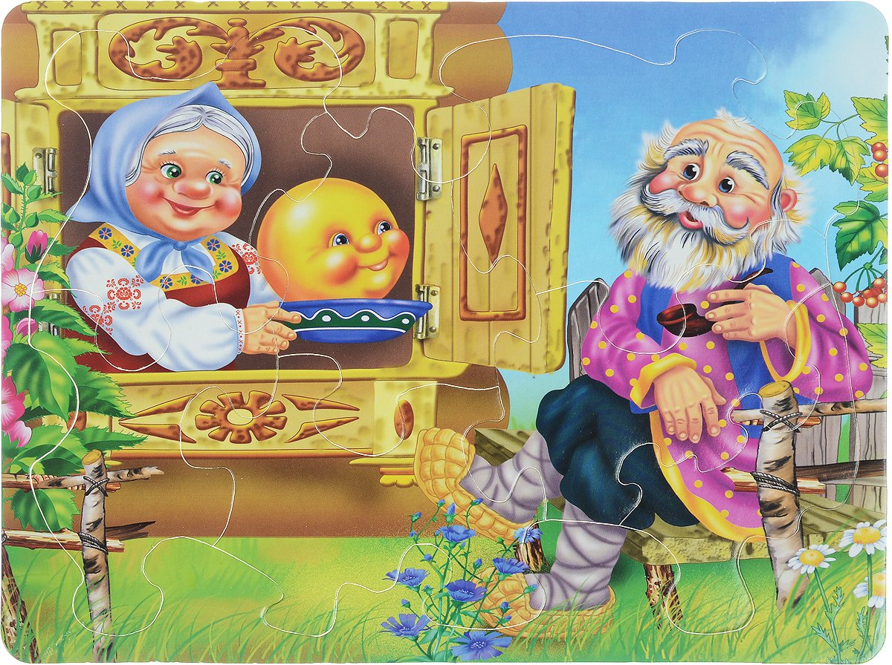

Bir bor ekan, bir yo’q ekan. Qadim zamonda chol va kampir bo’lgan ekan.. Bir kuni chol kampiriga qarab:
— Menga bo’g’irsoq pishirib ber, — debdi.
— Unimiz yo’q-ku. Bo’g’irsoqni nimadan pishirib beraman? — debdi kampir.
— Suprani qoqib-sidirsang, bo’g’irsoqqa yetadigan un yig’ilib qoladi, — debdi chol kampiriga.
Kampir suprani qoqib-sidirib bo’g’irsoqqa yetadigan un yig’ibdi.
Kampir unni qaymoqqa qoribdi, zuvala yasab bo’g’irsoq qilibdi va pechga joylabdi. Bo’g’irsoq qizarib , chiroyli bo’lib pishibdi. Kampir uni pech ichidan olib, sovishi uchun deraza ragiga qo’yibdi.

Yotaverib-yotaverib zerikkan bo’g’irsoq asta dumalab derazadan so’riga, so’ridan yerga tushibdi-da, eshik oldiga kelib qolibdi. Eshikdan dahlizga, dahlizdan pillapoyaga, pillapoyadan hovliga, hovlidan saroyga, saroydan tashqariga chiqib yo’lga ravona bo’libdi.
Bo’g’irsoq yo’lda dumalab ketayotib, bir quyonni uchratib qolibdi:
— Bo’g’irsoq, bo’g’irsoq! Men seni yeyman, — debdi quyon.
— Meni yema, quyonvoy, men senga qo’shiq aytib beraman, — debdi bo’g’irsoq va qo’shiq ayta boshlabdi:
— Men bo’g’irsoq, bo’g’irsoq, supradagi un-urvoq.
Sidirishib oldilar, qaymoqqa xo’p qordilar.
Pishdim pechda, tovada, sovitdilar havoda.
Qochib ketdim bobomdan, qochib ketdim buvimdan.
Eshit, quyon, bo’ldi bas, sendan qochish hech gapmas.
Bo’g’irsoq qo’shig’ini tugatishi bilan yana dumalab yo’lga tushibdi. Quyon bo’lsa og’zini ochib qolaveribdi.